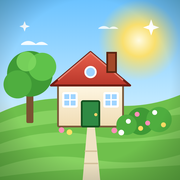

Curb AppealSupport
Need a hand with your yard? Most answers are right here.
How do I get more lives?
You can hold up to 5 lives. Losing a level uses one, and a new life comes back every 25 minutes. You can also buy a life with coins you've earned in the game. Winning never costs a life.
How do I earn stars and start the next job?
Every level you win earns a star. Tap the job button on your yard to see the next jobs and their star cost, then pick one to start. Many jobs let you pick a style when they finish, and you can tap anything in your yard that you picked a style for to change it later.
A level feels too hard.
Hard levels are marked and pay extra. Every level can be won without boosters, but boosters (bought with coins you earn) help. Try to make rockets, bombs and rainbow balls early, and swipe two of them together for a big combo.
I can't hear any music or sounds.
Open Settings (the gear) and check that Sound effects, Music and Outdoor ambience are turned up. The game follows your iPhone's silent switch, so turn that off, and make sure the volume is up.
Will I lose my progress?
Your progress saves automatically on your device after every level and every job. It isn't backed up to a server, so deleting the app deletes your progress.
Do I need the internet?
No. The whole game plays offline.
Does it cost anything?
Curb Appeal is free to play, with no ads. Every level can be won without paying. If you'd like a head start, the shop has optional coin packs and bundles from $0.99.
I bought coins but didn't get them.
Close the game completely and open it again. Any purchase that didn't finish is delivered automatically when the game starts. If they still don't arrive, email us with the date of the purchase and we'll sort it out.
How do I get a refund?
Purchases are made through Apple, so refunds are handled by Apple. Go to reportaproblem.apple.com, sign in with your Apple Account, and choose Request a refund.
Can I move my coins to another device?
Coins and progress are saved on the device you play on. Coin packs are used up when you buy them, so they can't be restored on another device.
Is my data collected?
No. There are no accounts, ads or tracking. See our Privacy Policy.